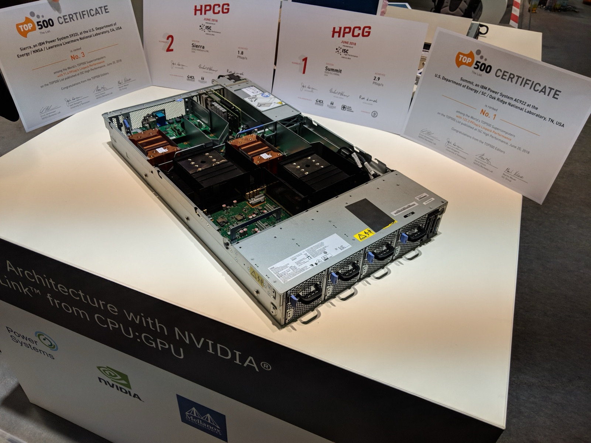

Executive Summary
"Swap your frontier LLM for a custom SLM 100 times smaller and cut your per-request cost by 80%." That is the shared sales pitch of the 2026 small-language-model (SLM) deployment market. Distil Labs' three-step pipeline is a compact demonstration of how this market works: route 1% of production traffic to collect traces, turn those traces into synthetic data to train and quantize a small model, then shift over the full traffic. The question this report holds onto is not "how much cheaper?" but "what actually underwrites those savings?"
The short answer: the size of the savings is decided not by model compression but by the quality of the data-curation pipeline that trained the model. And the vendor's own numbers give the first hint. The cost-reduction figure for its flagship reference customer, Knowunity, is quoted as 68% on the homepage yet 50% in the case study, a discrepancy inside a single company's own channels. That a vendor cannot even reconcile its own published figures makes the point: the credibility of a cost claim ultimately rests on the measurement and verification system behind it. In other words, it rests on data-quality governance.
This report breaks the 80% claim into three distinct cost components, names the two quality traps hidden inside the automated pipeline (the collapse of 1%-sample representativeness, and the inheritance of teacher bias) with academic grounding, and closes with a four-axis checklist practitioners can use to decide "when do we abandon the LLM for an SLM?" This is not vendor promotion but analysis through a critical data-quality lens.
10–30×
cheaper SLM serving
NVIDIA Research academic anchor — a figure with published methodology, unlike the vendor's 80%
50% vs 68%
vendor self-contradiction
Knowunity savings rate differs across the same company's own channels
≥5%
real-data threshold vs collapse
even full automation can't guarantee quality without real-data validation
3×
specialized small models by 2027
projected usage vs general-purpose LLMs (Gartner)
Anatomy of the 80% — Where Does the Cost Come From?
"80% savings" is not a single act of magic but the sum of three different cost reductions, and the three have entirely different natures. The first two are pure gains, but the third is a trade that converts variable cost into fixed cost, so under the wrong conditions it can turn into a loss. Without breaking this structure apart, you cannot tell where the "80%" holds and where it falls apart.
The first component is parameter reduction. A model roughly 100 times smaller than a frontier model (the vendor sometimes frames it as 400 times) spends far less compute per inference. This is the primary driver of a lower per-request price. The second is quantization. Compressing weights to low precision such as INT8 or INT4 shrinks GPU memory use and raises throughput. The third is self-hosting. Running the model on your own infrastructure instead of an external API removes the API provider's margin.
The problem lies in that third component. Self-hosting eliminates the API margin (a variable cost) but creates a new fixed cost: idle GPU spend plus engineering headcount. Aggregated estimates put self-hosting operations at a minimum of 1.5–2 FTE (on the order of $270K–$550K a year), and at enterprise scale 4–6 FTE (on the order of $720K–$1.5M a year). If traffic isn't large enough to absorb that fixed cost, then even with a cheaper per-request price, keeping the API is the better total cost of ownership (TCO).

There is one decisive gap here. Whether "80% per-request savings" is measured on raw token price alone, or on a TCO basis that includes data curation, retraining, monitoring, and headcount, the vendor does not say and public materials cannot confirm. And the only independent anchor for gauging the credibility of this savings claim is the academic literature. NVIDIA Research reports that specialized SLMs can be served "10–30× more cheaply" than frontier models (arXiv:2506.02153). The direction agrees with the vendor's claim, but remember that only the academic side has published its methodology.
Parameter reduction and quantization are gains on the model side; self-hosting is a trade in operating structure. The "80%" is the number when all three line up under specific traffic conditions, not a constant that reproduces under any workload.
What the Three-Step Pipeline Really Does — It's a Data Problem, Not a Model Problem
Distil Labs sums up its workflow with the frictionless promise of automation: "10 minutes of human effort and 4 commands." On the surface there are three steps: route 1% of production traffic to the vendor's endpoint to collect traces, build and deploy the SLM from that data, then switch over the full traffic. But open up those three steps and most of what happens inside is data curation, not modeling.
Relabel the middle step in the language of data engineering rather than the vendor's marketing, and it reads like this. Trace collection is training-data acquisition; synthetic-data generation is data augmentation; filtering is a quality gate; distribution matching is representativeness correction; post-training (SFT+RL) is supervision and preference-signal injection; and quantization is lightweight compression. There is essentially no step where a model architecture is chosen or newly designed. The heart of the pipeline is not the model but which data gets filtered in, and to what quality bar.
This relabeling matters because it shifts where responsibility sits. When the automation is slick, it looks as if there is nowhere for a human to intervene, but the smoothness of automation does not replace data-quality judgment. Which 1% sample to draw, what to strain out of the synthetic data, what distribution to match against: these remain matters of judgment, and that judgment determines the final model's quality. Behind the vendor's marketing hides a plain proposition: a good SLM is a function of good curation.
Two Quality Traps — 1% Representativeness and Inherited Bias
If the previous section established that the heart of the pipeline is data curation, we now have to look at the two traps hidden inside that heart. Both block the generalization of the "we maintain accuracy" claim, and both are the kind of failure that slick automation tends to conceal.
3.1Trap ① — the collapse of 1%-sample representativeness
The pipeline builds its training data from 1% of production traffic. Nothing guarantees that this 1% represents the full distribution. Common, frequent requests fit comfortably inside 1%, but rare long-tail edge cases, and the distribution drift that creeps in slowly over time, are easily dropped wholesale from a small sample. Where representativeness breaks, the SLM does not die loudly; it fails silently, degrading only on rare patterns and novel distributions, which average-accuracy metrics barely reveal. The automated pipeline hides this failure "smoothly."
3.2Trap ② — teacher-bias inheritance (≠ model collapse)
The second trap comes into focus only when you separate two frequently conflated concepts, because the defense against each is different.
Model collapse occurs when a model recursively retrains on its own output. With each generation the tail of the distribution (the rare modes) disappears first, and within 5–10 generations diversity breaks down. The decisive factor is the share of real data. Keep real data above roughly 5% and the distributional drift stays bounded; go fully synthetic and it diverges. Recent work finds collapse is less severe under an "accumulate" assumption (each generation adds data) than a "replace" assumption.
Teacher-bias inheritance has a different mechanism. Distil Labs' pipeline is not pure recursion; it trains a student SLM on the traces of a teacher LLM. So it is not identical to model collapse. But a separate, adjacent risk remains: the teacher LLM's biases, hallucinations, and blind spots pass straight through the synthetic data and are inherited by the student SLM. Because this is the inheritance of someone else's flaws rather than recursion on your own output, the defense differs too. The former calls for mixing in real data, the latter for independent validation of the teacher's outputs.
3.3An added vulnerability — quantization hurts smaller models more
This is why the previous section called quantization a "conditional gain." Lowering precision always concedes a little accuracy, and the size of that loss depends heavily on model size and task. A 70B-class model stays relatively stable even at INT4, but smaller models tend to show meaningful losses under methods like GPTQ, as the literature reports. Reasoning tasks in particular can drop sharply going one step further from INT4 to INT3. Whether GPTQ or AWQ is better is a question research answers inconsistently (it is model- and task-dependent), so no general verdict holds. In short, the advantage of "a 100× smaller model" and the drawback of "the smaller it is, the more fragile under quantization" are two faces of the same axis.
"Maintains the same accuracy" is a claim that holds only when three conditions align: a narrow task, representative data, and tolerable quantization. Shake any one of the three and the average metric can stay flat while the long tail quietly caves in. And all three conditions are matters of data and validation, not of the model.
The SLM Deployment Market — Where Distil Labs Stands
Analyzing one vendor's pipeline does not make that vendor the whole market. To place Distil Labs properly you have to look at two things: the real weight of the phrase "backed by IBM, AWS, and NVIDIA," and where the company sits in the competitive landscape.
4.1The real weight of the "backed by" logos
The IBM, AWS, and NVIDIA logos listed on the homepage are easy to read as peer-level business partnerships, but their actual nature is more likely startup-support-program level. Credit programs such as NVIDIA Inception and AWS Activate are offered broadly to early-stage companies with no equity or fee relationship, and no separate official announcement backing a peer partnership can be found. IBM is the exception. In the Rocketgraph case there is evidence of IBM's Granite model being used and deployed on IBM Power, and of IBM's own channels promoting the case, so a technical partnership is confirmed to be real. That said, the related performance figures remain a joint announcement, not third-party verification.

4.2The competitive landscape — an early-stage newcomer
By funding and maturity, Distil Labs is an early-stage player in the SLM/fine-tuning deployment market. The table below aggregates publicly available funding and valuation information; the figures vary by point-in-time and source, so use them for a relative sense of scale.
| Player | Scale (aggregated · estimated) | Position |
|---|---|---|
| Distil Labs | $7.7M Series A · team of ~12 | specialized in data-pipeline automation, early stage |
| Arcee AI | approx. $49M | the closest methodological competitor |
| Together AI | valuation ~$8.3B · ARR $1B+ | large serving/infrastructure player |
| Fireworks AI | valuation ~$17.5B | specialized in high-speed inference serving |
| Open-source stack | Unsloth · LLaMA-Factory (tens of thousands of stars) | implements a similar downsizing workflow for free |
This comparison is not meant to disparage the vendor. It simply lets you honestly gauge the relative size of the value proposition. Free open-source stacks like Unsloth and LLaMA-Factory already implement trace-based downsizing workflows, so what Distil Labs sells is not a new capability but the convenience of automation captured in "10 minutes, 4 commands." Whether that convenience is worth paying for depends on how much of the data-quality judgment each organization can shoulder on its own, which leads into the migration decision of the next section.
When Should You Drop the LLM for an SLM? — A Migration Decision Framework
Compressing the analysis so far into a practitioner's decision, the migration call should be framed not as "how cheap is it?" but as "can we secure the data quality?" An SLM migration has a fighting chance only when you clear the four axes below in order. The first three are necessary conditions; the fourth is the real gate.
Axis ① Task narrowness
The narrower the task, the better. A small model approaches frontier quality on clearly defined, narrow problems. Broad tasks like open-ended conversation or open reasoning carry a high risk of generalization failure.
Axis ② Traffic volume (break-even)
You need enough traffic to absorb the self-hosting fixed cost. Aggregated estimates suggest you have a chance above roughly 50–100M tokens per month versus a low-cost API, or 5.6–6.8M tokens per month versus a premium API (labeled "estimate" given low source confidence). Below that volume, keeping the API wins on TCO.
Axis ③ Latency / privacy / regulation
Is on-premise required? When data sovereignty and regulatory requirements, as in finance, healthcare, or the public sector, force self-hosting, the SLM migration is justified by regulation rather than cost.
Axis ④ The ability to guarantee data quality — the real gate
Can you validate on your own the representativeness of the 1% sample and the quality of the synthetic data? Even after clearing the first three axes, without a system to check long-tail representativeness and teacher-bias inheritance yourself, the SLM fails silently. This is where migrations are won or lost.
The direction of the market itself tilts toward SLMs. Gartner projects that by 2027, usage of specialized small AI models will reach three times that of general-purpose LLMs (press release, 2025-04-09). But the fact that the market is heading that way and the fact that your organization can protect quality through that migration are two separate things. If you cannot confidently clear the fourth axis, what you should be rushing to secure right now is not a model swap but data-validation capability.
The migration checklist compresses to a single sentence: cost can be a reason to migrate, but the gate of migration is the ability to guarantee data quality.
Why Pebblous Follows This Topic
This report's interest is not in the success or failure of any one vendor but in the data-quality question raised by the new economics of SLM distillation. Read Distil Labs' pipeline as a data operation and you see the AI-Ready Data thesis (that training-data quality determines model performance) being tested and confirmed in this very market. Routing 1% of traffic → collecting traces → synthetic data → filtering → distribution matching → post-training was, from start to finish, a data-pipeline quality problem.
In particular, the two traps this piece named (the distributional representativeness of the 1% sample, and teacher-bias inheritance through synthetic data) overlap precisely with the "data-distribution representativeness and long-tail coverage" problems DataClinic addresses. It lets us explain, in the concrete context of SLM distillation, how unrepresentative, low-quality training data hardens into holes in a model's internal representations. The model-collapse literature's "≈5% real-data mixing threshold" is the academic grounding for a data-curation argument: even a fully automated pipeline cannot guarantee quality without a minimum of real-data validation.
The on-premise and data-privacy requirements of regulated industries (finance, healthcare, the public sector) connect directly to Pebblous's customer base. For the claim that "self-hosted custom SLMs capture both data sovereignty and cost" to hold, someone must ultimately guarantee curation quality. Who guarantees the data quality? That question is this market's remaining bottleneck.
Editor's Note. Pebblous is a company that works on the diagnosis, cleaning, and quality certification of training data. If what decides winners and losers in the SLM migration boom is not the model but the ability to validate data quality, then the question this report raised is the same one Pebblous has long held onto. We do not pull the conclusion forward to promote ourselves, but we make it clear why we follow this topic.
References
All vendor figures in this report are as stated by Distil Labs (not third-party verified); market and academic figures are grounded in the sources below. Conflicting figures are given as ranges in the body.
Academic
- 1.Belcak, P. et al. (2025). "Small Language Models are the Future of Agentic AI." arXiv:2506.02153. — A non-vendor academic anchor for specialized SLMs being 10–30× cheaper to serve than frontier models.
- 2.Shumailov, I. et al. (2024). "AI Models Collapse When Trained on Recursively Generated Data." Nature, 631, 755–759. — The original model-collapse paper (preprint arXiv:2305.17493, 2023).
- 3.Seddik, M. E. A. et al. (2024). "How Bad is Training on Synthetic Data? A Statistical Analysis of Language Model Collapse." arXiv:2404.05090. — Statistical quantification of the real-data mixing threshold (ε>0, ≈5%).
- 4.Kurtić, E. et al. (2024). ""Give Me BF16 or Give Me Death"? Accuracy-Performance Trade-Offs in LLM Quantization." arXiv:2411.02355 (ACL 2025). — Empirical study of FP8/INT8/INT4 quantization accuracy-performance trade-offs.
Policy · Statistics · Market
- 5.Gartner, Inc. (2025-04-09). "Gartner Predicts by 2027, Organizations Will Use Small, Task-Specific AI Models Three Times More Than General-Purpose Large Language Models." Gartner Newsroom.
- 6.Grand View Research (2025). "Small Language Model Market Size, Share & Trends Analysis Report, 2024-2030." — SLM market size and CAGR estimates (varying by each institution's definition).
Vendor primary sources (label required)
- 7.Distil Labs (2026). "How Knowunity Used distil labs to Cut Their LLM Bill by 50%." distil labs Blog. — Knowunity accuracy 81%→93%, savings rate 50–68% (differs by channel), includes Rocketgraph on-premise case. All as stated by Distil Labs · not third-party verified.